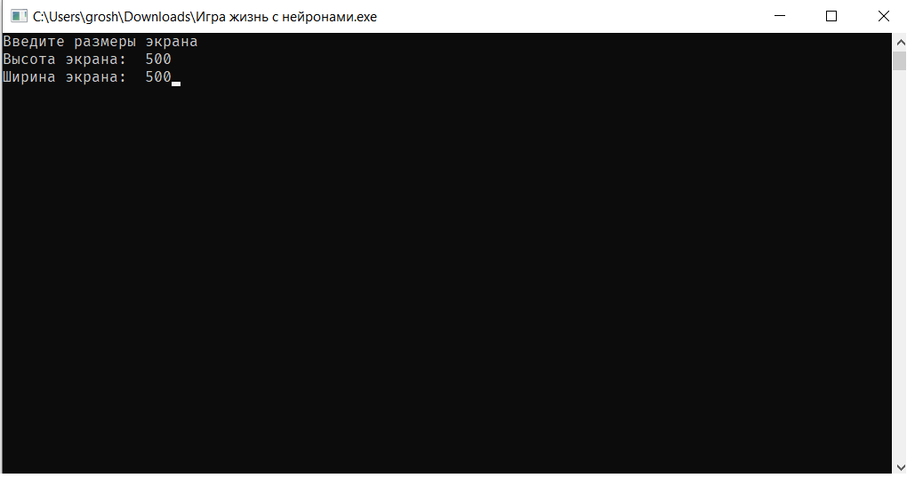
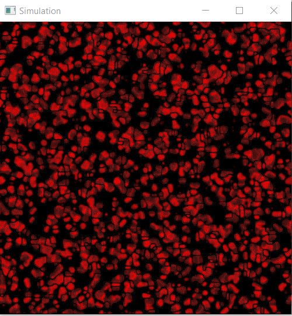
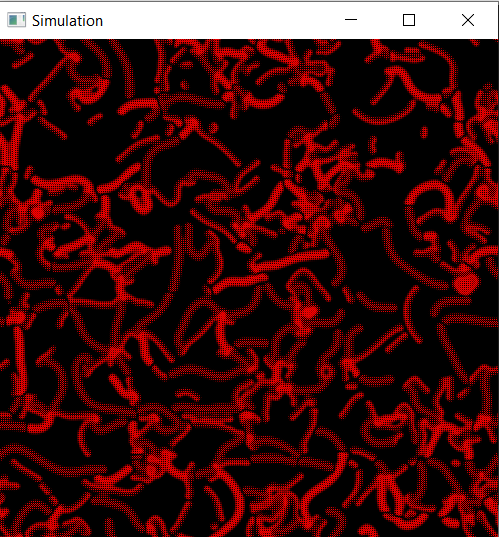

Главная
Проекты
Ориентированные графы
Нейронная игра жизнь
Игра жизнь с нейронами - это реализация классической игры жизнь c использованием ИИ. Игра жизнь - клеточный автомат, придуманный английским математиком Джоном Конвеем в 1970 году.



Данную версию приложения можно скачать ссылкой ниже.
Скачать